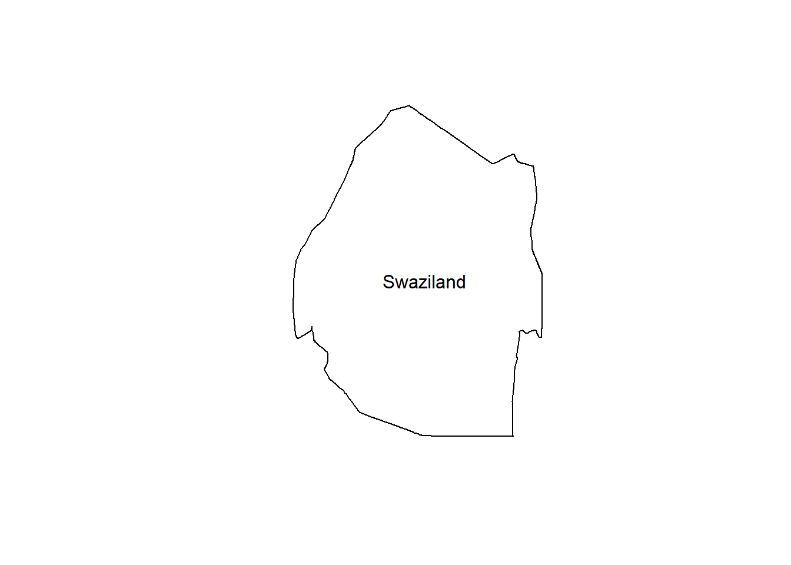

Get EVI, NDVI, Gross Primary Productivity (GPP), and Fraction of Photosynthetically Active Radiation (FPAR) MODIS products. NDVI and EVI products can be found in both Terra and Aqua satellites with product names MOD13Q1 and MYD13Q1 respectively at 250 m spatial resolution as 16 day composite. GPP 8-day composite is available at 500 km spatial resolution period with product names MOD17A2H and MYD17A2H in Terra and Aqua respectively (NASA, 2021). FPAR 8-day composite is available at 500 m spatial resolution as combined product of Terra and Aqua coded as MCD15A2H.
if (!"luna" %in% installed.packages()){
remotes::install_github("rspatial/luna")
}
library(luna)
prod <- getProducts("^MOD13Q1|^MYD13Q1|^MOD17A2|^MYD17A2")
knitr::kable(table(head(prod, n=3)), align = 'l')| provider | concept_id | short_name | version | Freq |
|---|---|---|---|---|
| LPDAAC_ECS | C107705237-LPDAAC_ECS | MOD13Q1 | 005 | 1 |
| LPDAAC_ECS | C115315503-LPDAAC_ECS | MOD13Q1 | 005 | 0 |
| LPDAAC_ECS | C117500873-LPDAAC_ECS | MOD13Q1 | 005 | 0 |
| LPDAAC_ECS | C107705237-LPDAAC_ECS | MOD17A2 | 005 | 0 |
| LPDAAC_ECS | C115315503-LPDAAC_ECS | MOD17A2 | 005 | 0 |
| LPDAAC_ECS | C117500873-LPDAAC_ECS | MOD17A2 | 005 | 1 |
| LPDAAC_ECS | C107705237-LPDAAC_ECS | MYD13Q1 | 005 | 0 |
| LPDAAC_ECS | C115315503-LPDAAC_ECS | MYD13Q1 | 005 | 1 |
| LPDAAC_ECS | C117500873-LPDAAC_ECS | MYD13Q1 | 005 | 0 |
We are almost ready to download the data. Let’s get Eswatini country boundary and start data downloads.
library(raster)## Loading required package: spsz <- getData("GADM", country="SWZ", level=0)
plot(sz)
text(sz,sz$NAME_0)
Define data parameters: product name, start and end date, and area of interest. According Food and Agriculture Organization (FAO), maize is grown in Eswatini between October–May with the growing season covering January–March. We adopt the growing season for yield prediction. We define date as follows:
start <- "2018-01-01"
end <- "2019-12-31"Thereafter, extract existing data files.
product <- "MOD13Q1"
mf <- luna::getModis(product, start, end, aoi=sz, download = FALSE)
length(mf)## [1] 70MODIS data can be download from EarthData. This requires specification of a storage directory, a user’s name and password. Here, the password is saved in a directory. We download the maize growing season months only.
pass <- readRDS("earthdata.rds")
modis_path <- "D:/JKUAT/RESEARCH_Projects/Eswatini/Data/MODIS/raw/"
mstart <- "-01-01"
mend <- "-03-31"
for(y in 2000:2020){
cat(y,"downloading..\t")
start <- paste0(y,mstart)
end <- paste0(y,mend)
luna::getModis(product, start, end, aoi=sz, download=TRUE,
path=modis_path, username=pass$username,
password=pass$password)
}## 2000 downloading..
## 2001 downloading..
## 2002 downloading..
## 2003 downloading..
## 2004 downloading..
## 2005 downloading..
## 2006 downloading..
## 2007 downloading..
## 2008 downloading..
## 2009 downloading..
## 2010 downloading..
## 2011 downloading..
## 2012 downloading..
## 2013 downloading..
## 2014 downloading..
## 2015 downloading..
## 2016 downloading..
## 2017 downloading..
## 2018 downloading..
## 2019 downloading..
## 2020 downloading.. Similarly, GPP and FPAR can be downloaded by changing the product type e.g. MCD15A2H for FPAR. Next we explore the images we have downloaded and start extracting information we require for yield prediction.
Created 14th May 2021 Copyright © Benson Kenduiywo, Inc. All rights reserved.